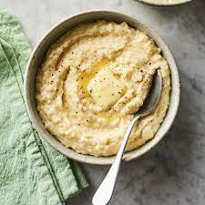

Grits

Description
Thick and stick to your ribs grits, the way they were meant to be
Ingredients
- 3 cups water
- 1 cup stone-ground grits
- 2 dried bay leaves
- 1/2 teaspoon kosher salt
- 1/2 cup unsalted butter
- 2 ounces grated Parmesan cheese
- 1 cup heavy cream
Steps
- Place water, grits, bay leaves, and salt in a pot. Bring to a boil over high heat. Remove from heat, cover, and let sit for 20 minutes
- Uncover the grits and boil over med-high heat. stir regularly and cook fo an additional 20-25 minutes.
- When the grits are al-dente, remove from heat, and discard the bay leaves. Fold in the butter, cream and cheese just before serving.